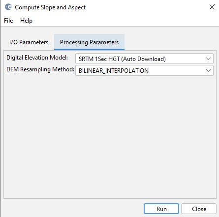

Compute Slope and Aspect Operator
The operator computes a map of the slope and aspect for a given satellite image using a user selected DEM. The
slope and aspect maps can be useful for terrain analysis. For example,
classifiers may want to exclude data from areas with steep slopes.
Slope represents the rate of change or steepness between neighbouring
elevations. Aspect identifies the downslope direction of the maximum
rate of change in value from each pixel to its neighbors or in other
words, the slope direction with respect to North. The slope and aspect
are computed using the user selected DEM and the pixel spacing saved in
the metadata of the given product. In case the pixel spacing are not
available, they are estimated using the geo-positions of the pixels in
the center of the image.
Input
- The input of this operator can be any optical or SAR product supported by SNAP.
Output
- The output of the operator are the original bands of the product plus three new bands: slope, aspect and elevation.
Parameters Used
- Digital Elevation Model: The DEM type. Currently the following
DEMs are supported. For better result, it is recommended to select a
DEM that has smaller spatial resolution than the pixel spacing.
- ACE2_5min
- ACE30
- ASTER 1sec GDEM
- GETASSE30
- Copernicus 30m Global DEM (Auto Download)
- Copernicus 90m Global DEM (Auto Download)
- SRTM 1Sec Grid
- SRTM 1Sec HGT (Auto Download)
- SRTM 3Sec
- External DEM
- DEM Resampling Method: Interpolation method for obtaining elevation values
from the original DEM file. The following interpolation methods are available
- nearest neighbour
- bi-linear
- cubic convolution
- 5-points bi-sinc
- 11-points bi-sinc
- 21-points bi-sinc
- bi-cubic
